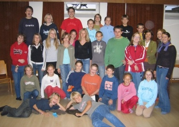

In Wagram sind derzeit über 30 Kinder und Jugendliche im aktiven Ministrantendienst. Die Ministranten sind eine der größten Gruppen in unserer Pfarre.
Die Hauptaufgabe ist das Ministrieren bei den Wochentags- und Sonntagsmessen. Zusätzlich zu diesen sind wir auch bei Hochzeiten, Maiandachten, Kreuzwegen und Begräbnissen im Einsatz. Besonders gefragt sind wir bei den kirchlichen Hochfesten - hier ministrieren wir alle gemeinsam.

Dafür proben wir in unserer wöchentlichen Ministrantenstunde (in der Schulzeit jeden Dienstag von 17:00 bis 18:00 Uhr) in denen wir - betreut von den Ministrantenführern - beispielsweise spielen, malen oder diskutieren. Dabei steht unsere Gemeinschaft im Mittelpunkt.

Wenn du Lust hast, auch zu ministrieren, und die 3. Klasse Volksschule besuchst oder älter bist, kannst du dich gerne entweder bei Gottfried Steger, den MinistrantenführerInnen oder in einer unserer Ministrantenstunden informieren!